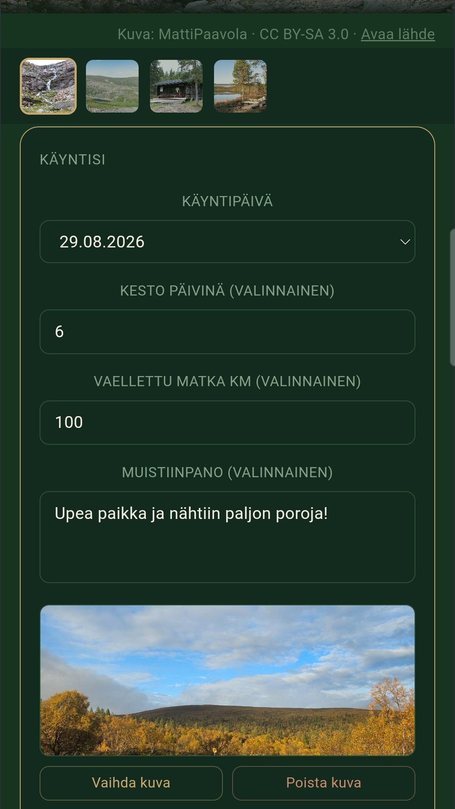
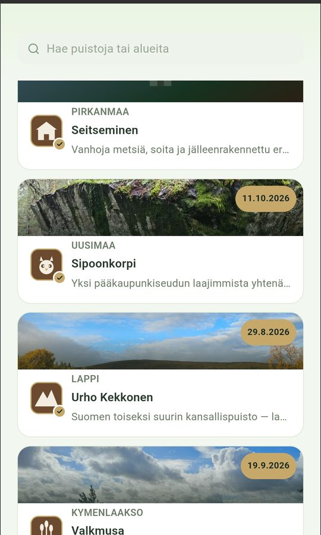
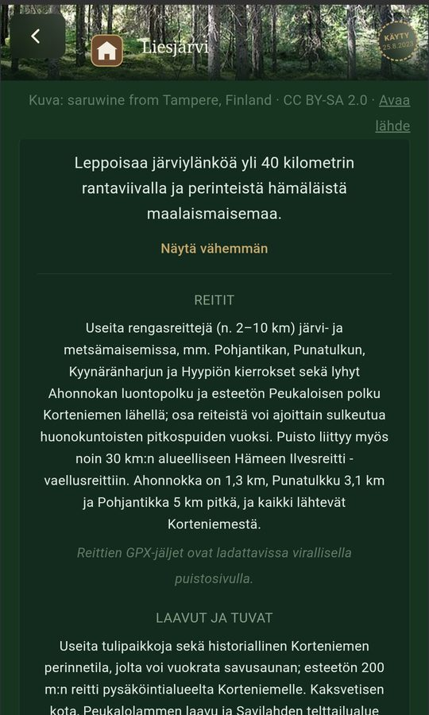
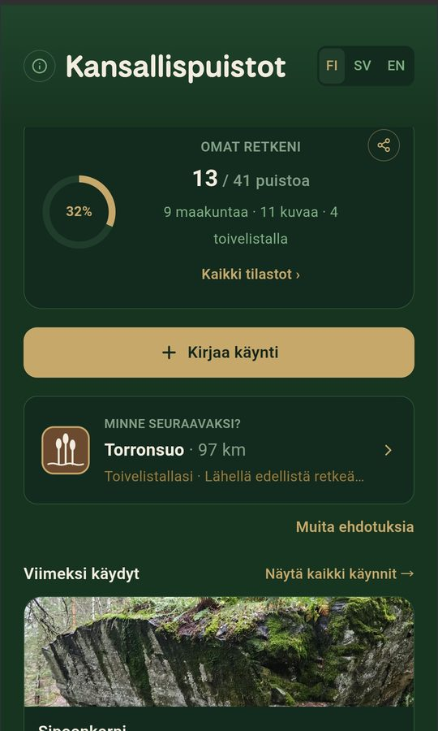

Suomen 41 kansallispuistoa taskussasi
Kirjaa käyntisi, tallenna muistot kuvineen, katso reitit ja tuvat kartalta ja löydä seuraava retkikohde. Kaikki tiedot pysyvät omassa puhelimessasi.
Lataa Google PlaystaKansallispuistot maksaa 1,99 € – kertaostos Google Playssa, ei tilausta.
- Android
- 1,99 € · kertaostos, ei tilausta
- Suomi · svenska · English
- Ei mainoksia
- Ei tiliä
- Ei analytiikkaa eikä seurantaa
Kaikki retkeilijän tarvitsema yhdessä paikassa
Kansallispuistot — retkeilijän opas ja lokikirja on retkeily- ja vaellussovellus kansallispuistoissa kulkeville – niin ensimmäistä puistoaan suunnittelevalle kuin kaikkia 41:tä keräävälle. Se on retkiopas, retkipäiväkirja ja retkikartta samassa sovelluksessa.
Käyntipäiväkirja
Päivämäärä, kesto, kuljettu matka, muistiinpano ja oma kuva jokaisesta käynnistä – samaan puistoon voi palata yhä uudelleen.
Kartta ja reitit
Puistojen rajat, merkityt reitit, tuvat, laavut, tulipaikat, telttailualueet ja pysäköinti Maanmittauslaitoksen kartalla. Valitse itse, mitä näet.
Mittaa ja tallenna omat reitit
Katso etäisyys omasta sijainnistasi, piirrä reitti kartalle ja tallenna se myöhempää varten.
Saavutukset ja tilastot
Seuraa, kuinka monessa puistossa ja maakunnassa olet käynyt, ja avaa omat merkit – vuodenajoista norppapuistoihin.
Minne seuraavaksi?
Ehdotuksia seuraavaksi puistoksi toivelistasi, etäisyyden ja saavutustesi perusteella – sekä retkivinkit ja muistilista.
Toimii myös maastossa
Puistojen tiedot, reitit ja retkeilypalvelut kulkevat sovelluksen mukana, ja aiemmin katsotut kartat näkyvät ilman verkkoyhteyttä.
Kuvia sovelluksesta




Tietosi pysyvät sinulla
Sovellus ei kerää sinusta tietoja. Kehittäjä ei näe käyntejäsi, kuviasi eikä sijaintiasi.
- Käynnit, muistiinpanot ja kuvat tallentuvat vain puhelimeesi
- Sijaintia käytetään vain luvallasi, eikä sitä lähetetä minnekään
- Ei käyttäjätiliä, mainoksia, analytiikkaa eikä seurantaa
- Varmuuskopioi tiedot itse tiedostoon ja siirrä uuteen puhelimeen
Myöskään tällä verkkosivulla ei ole evästeitä, analytiikkaa eikä seurantaa.
Lue koko tietosuojaseloste →Lähteet ja lisenssit
Sovellus käyttää avointa dataa näistä lähteistä. Kiitos!
- Maanmittauslaitos
- Taustakartta ja maastokartta (CC BY 4.0)
- LIPAS – Jyväskylän yliopisto
- Puistojen rajat ja retkeilypalvelut (CC BY 4.0)
- OpenStreetMap
- Merkityt reitit ja täydentävät retkeilypalvelut – © OpenStreetMap-tekijät (ODbL)
- Wikimedia Commons
- Puistojen kuvat; kunkin kuvan tekijä ja lisenssi näkyvät sovelluksessa kuvan alla
- Metsähallitus / luontoon.fi
- Linkit puistojen virallisille sivuille ajantasaista tietoa varten
Kansallispuistot — retkeilijän opas ja lokikirja on yksityisen kehittäjän sovellus, eikä se ole Metsähallituksen virallinen palvelu. Tarkista ajantasaiset tiedot, reittien kunto ja mahdolliset sulkemiset aina luontoon.fi-sivustolta.